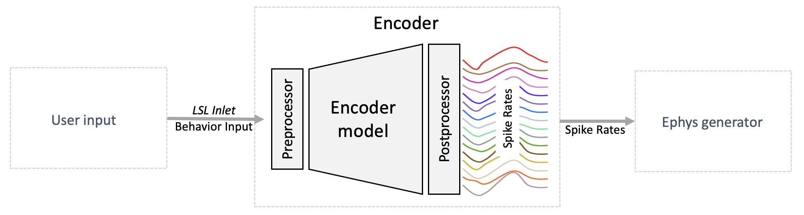
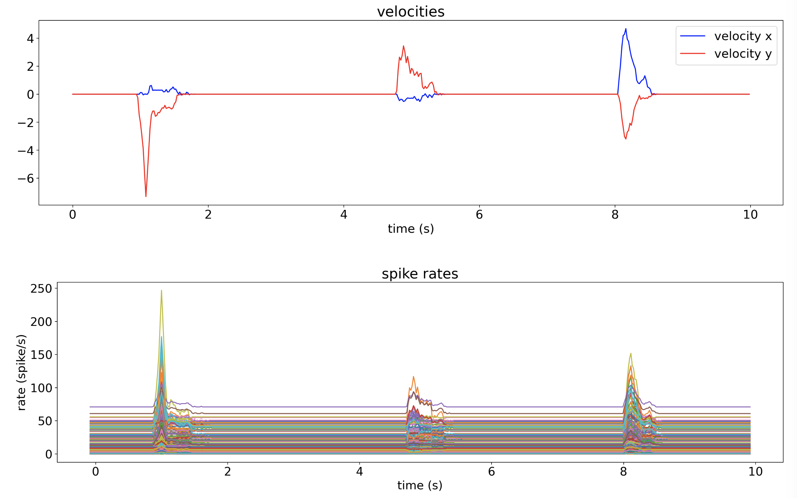

Encoder
 The encoder transforms behavioral data into spike rates using a pretrained model. It is designed as a pipeline with three stages: the preprocessor, the encoder model, and the postprocessor.
The image below shows an example of input and output of an encoder using a pretrained model for mouse cursor movements. A varying velocity input generates a variation in spike rates for all channels.

The input to the encoder can be a file or an LSL stream. Similarly, the output spike rates can be saved to a file or streamed via LSL.
To start the encoder, complete the installation, adjust the configuration, then run the script:
encoder
Customizing the Encoder
Plugins
Plugins are simple ways to change or extend how the encoder works. All stages of the encoder pipeline can be customized using plugins. The preprocessor and postprocessor are optional, where the encoder model plugin is required.
Plugins have several usages depending on which component is being plugged in.
The preprocessor plugin (via its implementation of the Processor protocol) is used to change the data before entering the encoder model (i.e. it modifies the behavior data); for example, it can be defined to scale behavioral data to accepted range, change behavioral data format, filter behavior data, add noise/disturbances to behavior data, etc.
The encoder model plugin (via its implementation of the EncoderModel protocol) is used to define the model that converts behavior data to firing rate data.
Finally, the postprocessor plugin (via its implementation of the Processor protocol) is used to change the data after passing through the encoder model (i.e. it modifies the spiking rate data); for example change dimensionality of the model output data (e.g. duplicate or remove channels), add noise to firing rate data, swap channels or zero out channels to simulate data disturbances, etc.
Preprocessor
A preprocessor is responsible for transforming the behavior input data before it is sent to the model. It should modify the received behavioral data to the encoder’s expected shape (i.e., same number of channels) and scaling. For example, the default encoder expects standardized inputs with mean of 0 and standard deviation of 1.
You can find examples of the preprocessor in the plugins example folder. To create and configure a preprocessor from scratch, check out the Example custom preprocessor as plugin.
Encoder model
The encoder model is responsible for converting preprocessed behavior data into spike rates.
Important
An encoder model plugin is required for running NDS.
Default model
NDS includes a default model called VelocityTuningCurvesModel. The example Train models for the encoder and decoder illustrates the steps performed for training the parameters of the included model. You can modify this example to create a model that suits the needs of your project.
Custom model
You can easily add a new model to NDS by implementing a plugin. Check out Creating a new model plugin for the encoder to get started.
Note
When adding a new model to the encoder, ensure that the input data has the same dimensionality and type as the input data used to train the model.
Postprocessor
The postprocessor modifies the encoder output into a format that the ephys generator will expect.
You can find an example of a postprocessor in the plugins example folder. To create and configure a postprocessor from scratch, check out the Example custom postprocessor as plugin.
Example custom preprocessor as plugin
Create a python script file in any location you prefer, for example preprocessor.py.
At a minimum, this script should define a function called create_preprocessor that returns an instance of a class that implements the Processor protocol.
The following snippet is a minimal but complete example of a preprocessor that just passes through the data unchanged as it receives it:
"""An example preprocessor"""
from neural_data_simulator.encoder import Processor
from neural_data_simulator.samples import Samples
class PassThroughPreprocessor(Processor):
def execute(self, data: Samples) -> Samples:
# Process the data and return the transformation.
return data
def create_preprocessor() -> Processor:
return PassThroughPreprocessor()
Your implementation of the execute function will be called by NDS with the data that you should transform and return.
To make NDS call your preprocessor, you have to add the path of the script you just created to the encoder configuration. Upon start the encoder will expect to obtain an instance of the preprocessor by calling the create_preprocessor function.
Example custom postprocessor as plugin
Create a python script file in any location you prefer, for example postprocessor.py.
At a minimum, this script should define a function called create_postprocessor that returns an instance of a class that implements the Processor protocol.
The following snippet is a minimal, but complete example of a postprocessor that just passes through the data unchanged as it receives it:
"""An example postprocessor"""
from neural_data_simulator.encoder import Processor
from neural_data_simulator.samples import Samples
class PassThroughPostprocessor(Processor):
def execute(self, data: Samples) -> Samples:
# Process the data and return the transformation.
return data
def create_postprocessor() -> Processor:
return PassThroughPostprocessor()
Your implementation of the execute function will be called by NDS with the data that you should transform and return.
To make NDS call your postprocessor, you have to add the path of the script you just created to the encoder configuration. Upon start the encoder will expect to obtain an instance of the postprocessor by calling the create_postprocessor function.
Creating a new model plugin for the encoder
If the included example VelocityTuningCurvesModel is not well suited for your use case and retraining this model is not a good option, you can create your own model and integrate it into the NDS encoder as a plugin.
Create a python script file in any location you prefer, for example model.py.
At a minimum, this script should define a function called create_model that returns an instance of a class that implements the EncoderModel protocol.
The following snippet is an example of a model that returns random values for spike rates:
"""Example of a custom EncoderModel."""
from neural_data_simulator.models import EncoderModel
from neural_data_simulator.samples import Samples
class ExampleModel(EncoderModel):
"""ExampleModel implementation."""
def encode(self, X: Samples) -> Samples:
"""Perform the encode and return the result."""
return Samples(
timestamps=X.timestamps, data=np.random.rand(X.timestamps.shape[0], 190)
)
def create_model() -> EncoderModel:
"""Instantiate the ExampleModel."""
return ExampleModel()
The encoder will expect to obtain an instance of the model from the create_model function. The encode function will be called periodically by the encoder with the data that you should evaluate and return. The period can be changed in the configuration. The data is an instance of Samples and its size depends on the sampling rate of the encoder input and the configured period. For example, if the encoder period is 0.02 seconds and the input sampling rate is 1000 Hz, then len(X) will be equal to 20 on average. You should return exactly the same number of samples as you received since the encoder advertised output sampling rate is the same as the input sampling rate.
To make NDS use your new model change the configuration adding the path of the script you just created so that the encoder can load it.